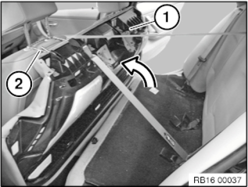
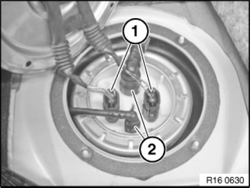
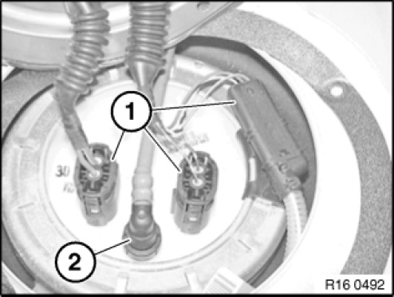
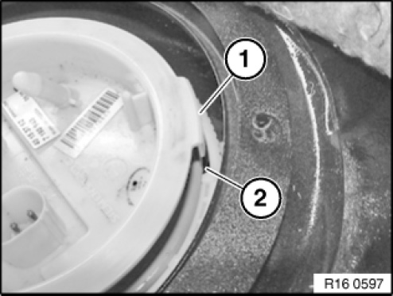
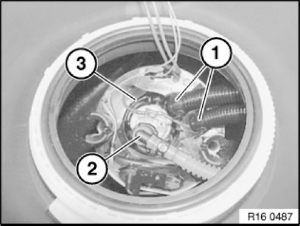
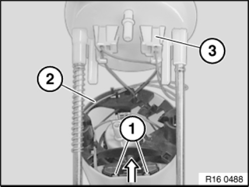

16 12 000 Removing and Installing or Replacing Fuel Gauge Sensor (Petrol/Gasoline, Right)
16 12 000 Removing and installing or replacing fuel gauge sensor (petrol/gasoline, right)
Special tools required:

Recycling
Fuel escapes when fuel lines are detached. Have a suitable collecting vessel ready.
Catch and dispose of escaping fuel.
Observe country-specific waste disposal regulations.

IMPORTANT:
Ensure adequate ventilation in the workbay.
Avoid skin contact (wear gloves).
Before starting the engine for the first time:
- Fill fuel tank with at least 5 litres of fuel.

Necessary preliminary tasks:
- Draw off fuel from fuel tank
- Remove rear seat bench

Only for E84, E87, E91:
Only unclip seat bench (1) on the left and right and fold up in direction of arrow as illustrated.
Secure seat bench on front seat (2).

Release screws (1) and remove cover (2) from right side of fuel tank.

USA national version:
Disconnect plug connection (1).
Unlock and detach vent lines (2).
If necessary, remove fuel line for auxiliary heater.

ECE national-market version:
Disconnect plug connection (1).
Unlock and detach vent line (2).
If necessary, remove fuel line for auxiliary heater.

Release screw cap with special tool 16 1 020 and remove service cap.
Installation note:
Procedure for tightening screw cap, see next work step.

IMPORTANT:
Fit screw cap without using a tool and tighten hand-tight.
Then tighten screw cap with special tool 16 1 020 until notch (1) points to marking (2).
NOTE: Illustration shows the tank removed.

Carefully raise service cap (1).
Unlock and detach vent line (2).
Installation note:
Clean sealing surfaces and install new seal (3).
Make sure that the lever sensor moves freely before fitting the service cap.
Locating rods (4) must fit correctly in the bore hole of the delivery unit.

Installation note:
Service cap can only be installed in one position.
When installing, make sure lug (1) of service cap engages in corresponding opening (2) on fuel tank.

Unclamp black return lines (1) from bracket.
Unlock and disconnect snap fastener (2) of fuel line.
IMPORTANT: Do not use any tools to release the fuel feed line.
Draw off remaining fuel from surge tank.
Carefully lift fuel pump with fuel level sensor (3) out of fuel tank. If necessary, turn fuel pump 90° anticlockwise and tilt towards lever sensor.

Removing fuel level sensor:
Carefully unlock tabs (1) and pull off fuel level sensor upwards in direction of arrow.
Disengage line (2) from holders.
Unlock plug connection (3) and detach from service cap.
Installation note:
Fuel level sensor and cable connector must audibly snap into place.
IMPORTANT:
Risk of damage:
Carefully feed cable out of cable guide.
Do not kink cable.